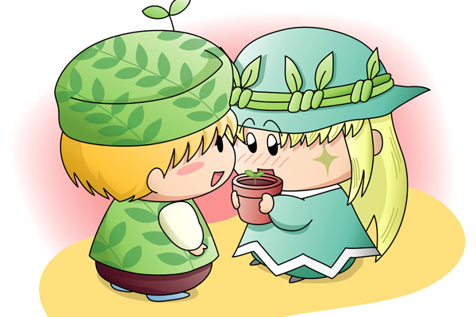

だいぶ前にハルさんから絵のリクエストをいただき、１ヶ月以上たってやっと描きました。「アロマちゃんの幼馴染みで気になる彼とは実はポーロくんだった」という設定というか想定のもと、二人を並べてみたという絵です（背景がやたらと手抜きですね^^;）。

妖精学校からの帰り道。
ポーロくんとアロマちゃんは今日も二人で一緒に帰ります。
ポーロの家に差し掛かったとき、ポーロはアロマへ向かって言いました。
ポーロ「ちょっと待っててね」
アロマ「うん」
戻ってきたポーロは何かを抱えています。
ポーロ「はい！」
アロマはドキドキしながら植木鉢を受け取りました。
ポーロ「お誕生日おめでとう！アロマちゃん」
アロマ「わぁ、ありがとう、ポーロくん。
でもいいの？
ポーロくんの大切なお花なのに…」
ポーロ「植物が大好きなアロマちゃんならお花もきっと喜ぶはずだよ。
まだ芽が出たばかりだけど、大きくなるととってもきれいな花を咲かせるんだ」
アロマ「まぁ、とても楽しみですわ。
お花が咲いたら今度は私のお家に遊びに来てくださいね」
ポーロ「うん、ボクも楽しみにしてるね」
植物を通じて二人がお互い惹かれ合う光景は不自然さが感じられないので、この想定は案外正しいのかもしれませんね。二人が果たして同学年なのかどうかは怪しいですが、必ずしも幼馴染み＝同学年である必要もなく、要は二人のハートがときめくような光景となればすべて問題なしということで。
それにしても出番の少なかったこの二人。アニメではアロマちゃんのセリフは多くなかったし、ポーロは一言もしゃべらなかったしで、二人の口調はこれで合っているのかかなり微妙です。今回はたいしてドキドキ感のない展開になってしまいましたが、今後この続きのストーリーを描いていきたいところです(^^)。
(2006/4/13)